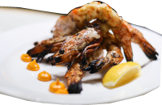

Pratos delíciosos
Em Pancas traz um apetite voraz pela comida da Josete, com exelente café da manhã, almoço e jantar que deixam saudades.
As delícias que o aguarda
Na hora do café da manhã, no almoço ou jantar, sempre um prato delicioso e agradável.

O melhor prato
A muqueca capichaba é sem dúvida uma iguaria
Pedidos com um rico cardápio
| Opções | Dias | N0 Pessoas | SubTotal |
| Café da Manhã | 1 | N0 1 | R$120,00 |
| Almoço | 2 | N0 2 | R$450,00 |
| Café da Tarde | 3 | N0 4 | R$520,00 |
| Jantar | 5 | N0 2 | R$760,00 |